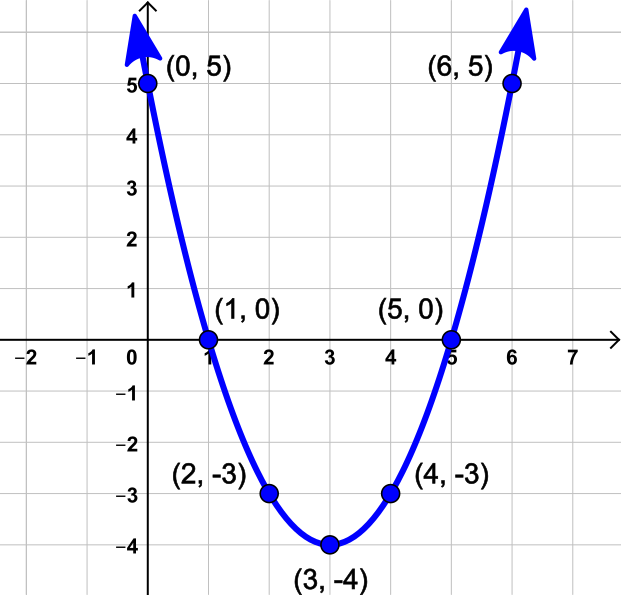
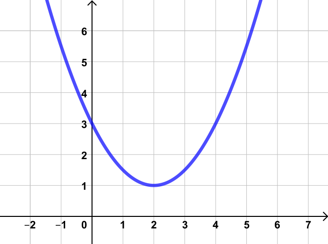

5.4 Graphing Quadratic Equations
Introduction

When farmers plant an orchard, they're concerned about how to achieve the largest possible harvest. They don't want to plant too few trees—that's obvious—but they also don't want to plant too many, because overcrowded trees don't produce as much. So how do they determine the right number to maximize the harvest?
Questions like this, where optimizing results is important, are often modeled by quadratic equations, and the coordinates of the vertex often hold the answers we are looking for.
Graphing a Quadratic Equation with a Table
We discussed graphing in section 5.1, but a short review is in order. The general process is to use the equation make a table of values, convert those values into \((x,y)\) points, plot the points and then draw a smooth line or curve between them.
To make a table of values we need to pick several \(x\)-values and insert each one to the equation. Keep in mind that the choice of \(x\)-values is always up to us; we can pick any values we want. If the values we choose don't give us a enough points, we can always go back and compute more.
Make a table of values for \(y=x^2-6x+5\).
Solution
For this example we'll choose \(x=0\) through \(x=6\), and calculate the values of \(y=x^2-6x+5\).
| \(x\) | \(0\) | \(1\) | \(2\) | \(3\) | \(4\) | \(5\) | \(6\) |
|---|---|---|---|---|---|---|---|
| \(y\) | \(5\) | \(0\) | \(-3\) | \(-4\) | \(-3\) | \(0\) | \(5\) |
Use the table of values from part a to graph \(y=x^2-6x+5\).
Solution

Identifying Parts of a Parabola
Every quadratic equation has a graph similar to the one above. That U-shaped graph is called a parabola.
The graph of a parabola has several key features. Similar to any graph, the \(y\)-intercept is the point where the graph crosses the \(y\)-axis. Additionally, any point where it comes in contact with the \(x\)-axis is an \(x\)-intercept. A parabola may have as many as two \(x\)-intercepts or none at all.
The turning point of a parabola is known as the vertex. Depending on the direction of the graph, the vertex can represent a maximum or a minimum.
An imaginary vertical line passing through the vertex is called the axis of symmetry. It divides the parabola into two symmetrical halves, making it easier to sketch the graph.
All of these features are clearly labeled in the image below.

Identify the intercepts and vertex of each parabola graphed below.
| a. | b. |
|---|---|
 |
 |
Solution
a. The \(x\)-intercepts are at \((-1,0)\) and \((7,0)\). The \(y\)-intercept appears to be around \((0,2.5)\), but it's hard to be exact. The vertex is at \((3,6)\).
b. This parabola does not have any \(x\)-intercepts. The \(y\)-intercept is \((0,3)\). The vertex is at \((2,1)\).
Locating Key Points on a Parabola
In contrast to the straightforward slope-intercept form of a line, determining most features of a parabola from its equation \(y=ax^2+bx+c\) can be challenging, but two are straightforward.
Parabolas either open up, like a cup, or down, like a frown. That direction is determined entirely by the leading coefficient \(a\). If it is positive, \(a \gt 0\), then the parabola opens upward. If it is negative, \(a \lt 0\), then the parabola opens downward.
The only point that is simple to find is the \(y\)-intercept. If \(y=ax^2+bx+c\), then the constant value \(c\) is always the \(y\)-intercept.
Since \(x\)-intercepts always have a \(y\)-coordinate of \(0\), they are solutions to the equation \(0=ax^2+bx+c\). To find them we either solve by factoring or by using the quadratic formula.
For the vertex it is common to use \((h,k)\) for its coordinates. Each coordinate is computed separately. Starting with the \(x\)-coordinate of the vertex, we use the formula
\[h=\frac{-b}{2a}\]Once we know \(h\), we substitute it back into the quadratic equation to get the \(y\)-coordinate of the vertex.
\[k=a(h)^2+b(h)+c\]An alternate way to calculate the \(y\)-coordinate of the vertex is to use this formula.
\[k=c-\frac{b^2}{4a}\]While some people prefer memorizing this alternative formula, the recommended method is the prior one where you substitute \(h\) into the original quadratic equation to get \(k\), as it requires memorizing one less formula. But since both methods lead to identical values, you have the flexibility to choose the approach that suits your personal preference.
Find the intercepts and vertex of \(y=2x^{2}-4x-16\).
a. Find the y-intercept.
Since the constant term is \(c=-16\), the \(y\)-intercept is at \((0,-16)\).
b. Find the x-intercepts.
The \(x\)-intercepts can be found using the quadratic formula with \(a = 2\), \(b = -4\), and \(c = -16\).
\begin{align*} x &= \frac{-b \pm \sqrt{b^2-4ac}}{2a} \\ x &= \frac{-(-4) \pm \sqrt{(-4)^2-4(2)(-16)}}{2(2)} \\ x &= \frac{4 \pm \sqrt{144}}{4} \\ x &= \frac{4 \pm 12}{4} \end{align*}This gives us two x-intercepts:
\begin{align*} x = \frac{4 + 12}{4} = 4 \quad &\text{or} \quad x = \frac{4 - 12}{4} = -2 \end{align*}So the x-intercepts are at \((4, 0)\) and \((-2, 0)\).
c. Find the vertex.
First, find the x-coordinate of the vertex using \(h=\frac{-b}{2a}\):
\begin{align*} h &= \frac{-b}{2a} = \frac{-(-4)}{2(2)} = \frac{4}{4} = 1 \end{align*}Next, find the y-coordinate by substituting \(x = 1\) into the original equation:
\begin{align*} k &= 2(1)^{2}-4(1)-16 \\ &= 2 - 4 - 16 \\ &= -18 \end{align*}Therefore, the vertex is at \((1, -18)\).
Graphing with Symmetry
You might have noticed something intriguing about the values in the table from Example 1. However, if you didn't spot it, don't worry. Let's take another look at the table for \(y=x^2-6x+5\), this time with a splash of color.
| \(x\) | \(0\) | \(1\) | \(2\) | \(3\) | \(4\) | \(5\) | \(6\) |
|---|---|---|---|---|---|---|---|
| \(y\) | \(5\) | \(0\) | \(-3\) | \(-4\) | \(-3\) | \(0\) | \(5\) |
Notice the matching colors that highlight the repeated \(y\)-coordinates. The reason some values are repeated lies in the fact that the vertex rests upon the axis of symmetry. This axis serves as a dividing line, and every point to the right of it has a mirror copy on the left-hand side. As a consequence, \(x\)-values that are equally distanced from the vertex will have the same \(y\)-value. In essence, if you know where the vertex is you can reduce the number of calculations needed by half.
Combining symmetry with our previous discoveries gives an efficient process for graphing quadratic equations precisely with a minimum of effort.
- Notice the sign of the leading coefficient \(a\). This will guide the general shape of the parabola, whether it opens upward (\(a \gt 0\)) or downward (\(a \lt 0\)).
- Plot the \(y\)-intercept \((0, c)\).
- Find and plot the vertex \(h,k\).
- Choose a few \(x\)-values to the right of the vertex, compute their \(y\)-values, and plot those points.
- Use symmetry to plot the mirrored copies of the points from step 4.
- If desired, use the quadratic formula or factoring to locate and plot the \(x\)-intercepts.
Other Quadratic Forms
While our focus here has been on quadratics in the standard form \(y=ax^2+bx+c\), you should know that quadratics can come in many formats, each with it's own pros and cons. We will mention two here for your reference.
A factored quadratic would have the form \(y=a(x-x_1)(x-x_2)\). In that form it is easy to find the two \(x\)-intercepts, \((x_1, 0)\) and \((x_2, 0)\), but more challenging to locate the vertex.
Another form, called the vertex form, makes it easy to find the vertex \((h,k)\), but more challenging to locate the \(x\)-intercepts. That form is \(y=a(x-h)^2+k\).
The factored and vertex forms represent alternative ways to express quadratic equations. And while you might encounter them in other settings, we will not discuss them further.
Practical Application of Vertex

We will finish this section by returning to the example in the introduction.
Growers in Oregon's Willamette Valley produce over \(99\%\) of all the hazelnuts (also called filberts) eaten in the United States. The rich volcanic soils and moderate climate are perfect combination for large harvests.
A mature hazelnut tree (\(12\) years or older) can produce \(32\) pounds of nuts per year if has plenty of space. In fact, putting \(80\) trees on an acre of land provides enough space to produce the maximum yield of \(32\) pounds of nuts per tree.
But hazelnut farmers don't plant \(80\) trees per acre. Why? Because their goal is not to make sure each individual tree has a maximum yield, but rather to maximize the yield of each acre of land. It may make sense to plant a few more trees per acre, even if doing so means each tree doesn't give the full \(32\) pounds.
If the average yield per tree drops \(0.2\) pounds for each extra tree planted, then the total pounds of hazelnuts harvested per acre is given by \(y=-0.2x^2+16x+2560\) where \(x\) is the number of extra trees planted above \(80\).
In the scenario described above, what will the harvest per acre be if no additional trees are planted?
If no additional trees are planted then \(x=0\), so finding the \(y\)-intercept of \(y=-0.2x^2+16x+2560\) would give us the answer. Since the constant is \(c=2560\), the \(y\)-intercept is at \((0,2560)\). So if no additional trees are planted, \(2560\) pounds of hazelnuts would be harvested per acre.
How many additional trees should be planted per acre in order to maximize the harvest?
The maximum harvest occurs at the vertex of \(y=-0.2x^2+16x+2560\). The \(x\)-coordinate of the vertex tells us how many extra trees to plant.
\begin{align*} h &= \frac{-b}{2a}\\ &= \frac{-16}{2(-0.2)}\\ &= \frac{-16}{-0.4}\\ &= 40 \end{align*}Therefore, \(40\) additional trees should be planted to maximize the harvest.
What is the size of that maximum harvest per acre?
To find the maximum harvest, we find the \(y\)-coordinate of the vertex by substituting \(x = 40\) into the original equation:
\begin{align*} k &= -0.2x^2+16x+2560 \\ &= -0.2(40)^2+16(40)+2560 \\ &= -0.2(1600)+640+2560 \\ &= -320+640+2560 \\ &= 2880 \end{align*}The maximum harvest would be \(2880\) pounds per acre.
Summary: Planting \(40\) additional trees beyond the initial \(80\), for a total of \(120\) trees, will lead to the maximum harvest of \(2880\) pounds per acre, which is significantly more than the \(2560\) pounds we started with.
Conclusion
In this section we've seen how to graph quadratic equations and identify features of their graphs. We've also seen how to locate those points precisely from the equation and interpret their meaning in real life situations.
In our next, and final, section, we will explore different ways technology can be used to simplify the process even further.